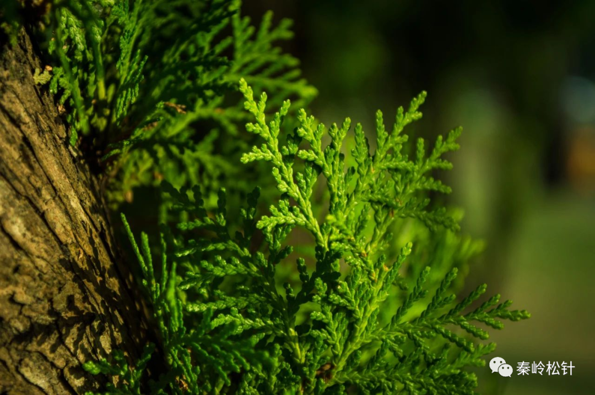
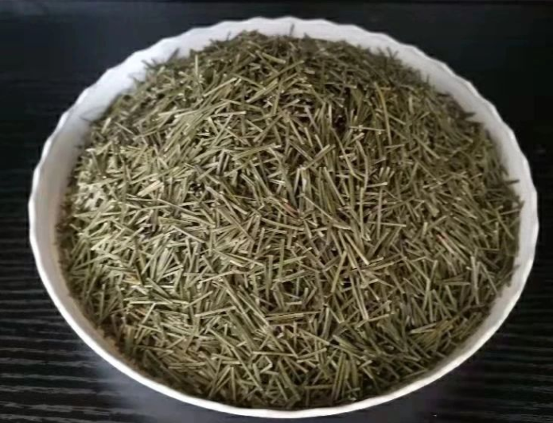
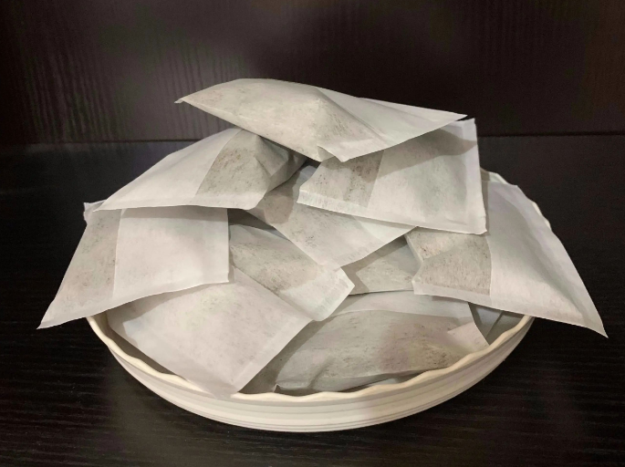

秦岭松针 2023-12-27 08:30 Posted on 陕西

早上刚洗头，下午就出油，每天的形象都是“邋里邋遢”的，甚至还有一点“哈喇”味，感
觉做什么事情都没有自信，怎么办？
头“油”从哪里来？其实，头皮出油大部分都来自皮脂腺。它“躲藏”在真皮中，和毛囊依
附在一起，有自己独立的功能。皮脂腺可以分泌出皮脂，然后通过导管排出到皮肤表
面，与皮肤表面的脂质混合而成我们常见的“油”。
在人的头部区域，皮脂腺主要分布于面部、额头、头皮三处。因此，
人而言，除了头皮出油外，通常还伴有面部易于出油的情况。只不过，由于头皮的皮
脂腺数量比脸部多了近3倍，所以头皮“出油”的问题会更为突出。
虽然头油确实对我们的个人形象会产生一定的负面影响。但它也不是完全无用，因为
它是皮肤最天然的保护伞，能保温，还能锁住皮肤的水分，阻挡一些外界的真菌和杂
物。所以正常的油脂分泌无需管理，只要定期清洁即可。

改善头皮油腻状况，正确洗头是非常必要的一环：
1.使用正确的洗护产品
头皮喜欢弱酸性的环境，所以绝对不能用碱性的制剂去洗头，如肥皂和洗衣粉。一般
应选用中性或中性偏弱酸性的洗发水。
2.水温控制
水温一般控制在38℃～40℃左右比较合适，水温过高时可能会伤及头皮，过低时去油
和去屑的功能会下降。
3.搓揉方法
搓揉的时候应当用指腹对头发进行螺旋样摩擦，达到清洁头皮、改善头皮微循环和保
护头发的目的，注意避免用指甲抓挠。
4.洗头的频次
夏天出汗多，头皮微生物多，盐分较大，可两天一洗。
此外，还可根据个人情况决定洗头频率，若感到头发油腻或头皮瘙痒，那么就应该洗
头了。
5.洗头后自然干最好
使用吹风机的时候要注意，吹风机出风口和头发应保持适当距离，太近会导致发内水
分快速蒸发，破坏头发的正常结构。
另外，头发本身含有大量蛋白质，过热会导致蛋白质变性，对头发造成伤害。

✦侧柏叶水
侧柏叶以新鲜采摘的为好（药店购买干品亦可）。
每次取100克，先用清水浸洗2遍，剪成小段，将处理后的侧柏叶加水2000毫升，浸泡
1小时，用大火煮开后，再用小火煎煮20分钟，自然冷却后用细纱布过滤出药液。
洗发时将药液倒入掌心，直接在头发上轻轻揉搓，保留15～20分钟，最后用清水冲洗
干净即可。
使用药液前可以先用常规洗发剂清洁头发。
✦啤酒洗发
我们的头皮好比土地，毛发相当于庄稼。土地肥沃，庄稼才能长得旺。头皮喜欢弱酸性的环境，在众多弱酸性物质中，啤酒易于获得，味道更好。
并且啤酒中含有大量的氨基酸和B族维生素，可以对头皮起到滋养作用。平时，没有酒精过敏的人群可以适当使用啤酒来护发，但记得要冲洗干净哦！